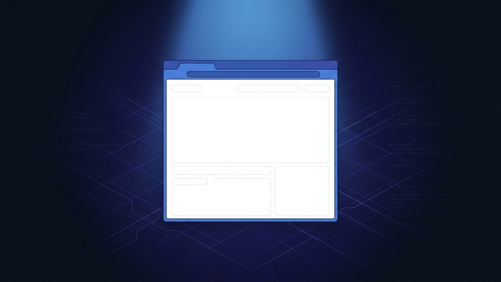

WordPress White Screen of Death: What It Is and How to Fix It
A totally blank white page, no error, no text, nothing — not a crash you can read, just silence. It looks worse than it is: nearly every case is a normal PHP fatal error that your server is deliberately hiding from view, and there's a fast, safe way to reveal it.

What is the problem?
The white screen of death, often shortened to WSOD, is exactly what it sounds like: you load your site and get a completely blank white page. Not an error message, not a broken layout with missing images — nothing. If you view the page source, the body is empty or cuts off mid-way through. The browser reports the page loaded successfully (a normal HTTP 200 status), which is precisely why it's so disorienting: as far as the browser is concerned, nothing went wrong.
Quick answer: a PHP fatal error is happening on the server, but display_errors is switched off (the default on production hosting, for security), so instead of an error message you get silence. Turn on error logging and the exact cause appears within minutes.
This is different from a page that shows an actual error message. If your site displays a red "critical error" notice, or a page titled "500 Internal Server Error", you have a related but distinct problem — see WordPress critical error or WordPress 500 error instead, since the diagnostic path is slightly different for each.
Common symptoms
- The front end of the site loads a completely blank white page, with no text or error visible anywhere
- The wp-admin dashboard is sometimes blank too, locking you out of the backend entirely
- Viewing the page source in your browser shows an empty
<body>, or content that cuts off partway through - Only specific pages are blank while others load normally, which usually points to a widget, shortcode or template file specific to those pages
- It started immediately after updating a plugin or theme, installing something new, an automatic WordPress core update, editing
functions.phporwp-config.phpdirectly, or restoring a backup - The site was fine a moment ago and nobody knowingly changed anything — often an automatic background update is the actual trigger
Why does this happen?
WordPress runs on PHP, and PHP has one particular failure mode that behaves this way: a fatal error. When PHP hits code it genuinely cannot continue past — a function that doesn't exist, a class that was never loaded, memory that ran out — execution stops immediately, right where it failed. Everything the page was supposed to output after that point simply never gets sent to the browser.
On a development setup, PHP would print that error directly onto the page. On production hosting, display_errors is switched off by default, specifically so a fatal error doesn't leak file paths, plugin names or other details to a stranger visiting your site. The error still happens and still gets recorded — just to a log file instead of the screen. That's the entire mechanism behind a white screen: a real, specific, fixable error that's being logged rather than shown to you.
Common technical causes
- PHP's memory_limit was exhausted by a plugin, theme process, or import/export job mid-run
- A plugin or theme update removed or renamed a function that another active plugin or the theme still calls, causing an "undefined function" fatal
- A syntax error from a manual edit to
functions.php,wp-config.php, or a code-snippet plugin entry — a missing semicolon or bracket is enough - A PHP version incompatibility, where an older plugin or theme uses a function that's since been deprecated or removed from PHP itself
- Two plugins declaring the same function or class name, which PHP cannot allow and treats as fatal
- A corrupted core, theme or plugin file from an update that was interrupted partway, or a bad file transfer
- A hacked or injected file that broke while trying to run, which is worth ruling out if this followed no update you're aware of — see WordPress malware removal if that looks likely
How to diagnose it
- Turn on debug logging without displaying it. Open
wp-config.phpvia FTP and add, or edit, these three lines above the line that says "That's all, stop editing!":define('WP_DEBUG', true);define('WP_DEBUG_LOG', true);define('WP_DEBUG_DISPLAY', false);This writes every error towp-content/debug.logwithout showing anything to visitors. - Reproduce the blank page, then open the log. Visit the file at
wp-content/debug.logvia FTP or your host's File Manager and check the newest entries at the bottom — the exact file and line number are usually right there. - Check your host's PHP error log directly if
debug.logis empty. Most cPanel-based hosts have an "Errors" section in the control panel; it's often faster than waiting on WordPress's own logging. - If wp-admin is also blank, you'll need FTP, SFTP or File Manager access instead, since the dashboard is affected by the same underlying error.
- Rename the plugins folder (or one plugin's folder at a time) via FTP to
plugins-disabledtemporarily. WordPress automatically deactivates any plugin whose files it can't find, which restores the site immediately if a plugin is the cause. - Switch the active theme by renaming its folder via FTP. WordPress falls back to a default theme automatically when the active one's files go missing, confirming or ruling out a theme conflict in seconds.
- Sort your files by modification date via FTP to see exactly what changed right before the white screen appeared, if the timing isn't already obvious.
How to fix it, step by step
- Get the exact error text first. Following the diagnosis steps above, find the line that says something like
Fatal error: Uncaught Error: Call to undefined function...— it names the exact file, line, and often the plugin responsible. - If a plugin update caused it, rename that plugin's folder via FTP to deactivate it immediately and restore the site, then update it to its latest version (or replace it) before reactivating.
- If it's a manual code edit, open the exact file and line the error names, and either fix the syntax error or remove the line entirely. Restoring that one file from a recent backup works just as well if you have one.
- If it's a memory limit, add
define('WP_MEMORY_LIMIT', '256M');towp-config.php. If the error persists, the server's PHP-level memory ceiling needs raising too — ask your host, since a wp-config value can't exceed what the server allows. - If a core file looks corrupted, re-upload fresh copies of the
wp-adminandwp-includesfolders from a matching WordPress version, downloaded directly from wordpress.org. Never overwritewp-content, since that's where your themes, plugins and uploads live. - Clear every caching layer once the site is back — a cache can keep serving the blank result even after the underlying error is fixed.
- Turn
WP_DEBUG_DISPLAYandWP_DEBUGback off once you've confirmed the fix, so raw errors are never shown to visitors in normal operation going forward.
When this needs professional help
Plenty of white screens are a five-minute fix once you can see the actual error. It's worth bringing in a developer when:
- The site is fully down and every minute matters — an active store losing orders, a client site with visitors arriving right now
- wp-admin is blank too, so FTP or File Manager is the only way in, and you're not comfortable working there directly
- The error text points to a core file, an unfamiliar file that shouldn't exist, or anything that looks like it could be a hack rather than a normal update conflict
- The same white screen keeps coming back after every plugin or theme update, which means the underlying conflict was patched over rather than actually resolved
- You don't have a recent backup and are unsure which change to revert
How I can help
A blank white page with no visible error is one of the more stressful ways for a site to fail, precisely because it gives you nothing to search for. I read the actual PHP error log first rather than guessing, so I know the exact cause before I change anything, and I take a backup and staging copy before touching a live site so there's always a working version to fall back to. Most white screens are fixed within 24–48 hours once I have access, and genuinely urgent cases — a store that's fully down — get priority.